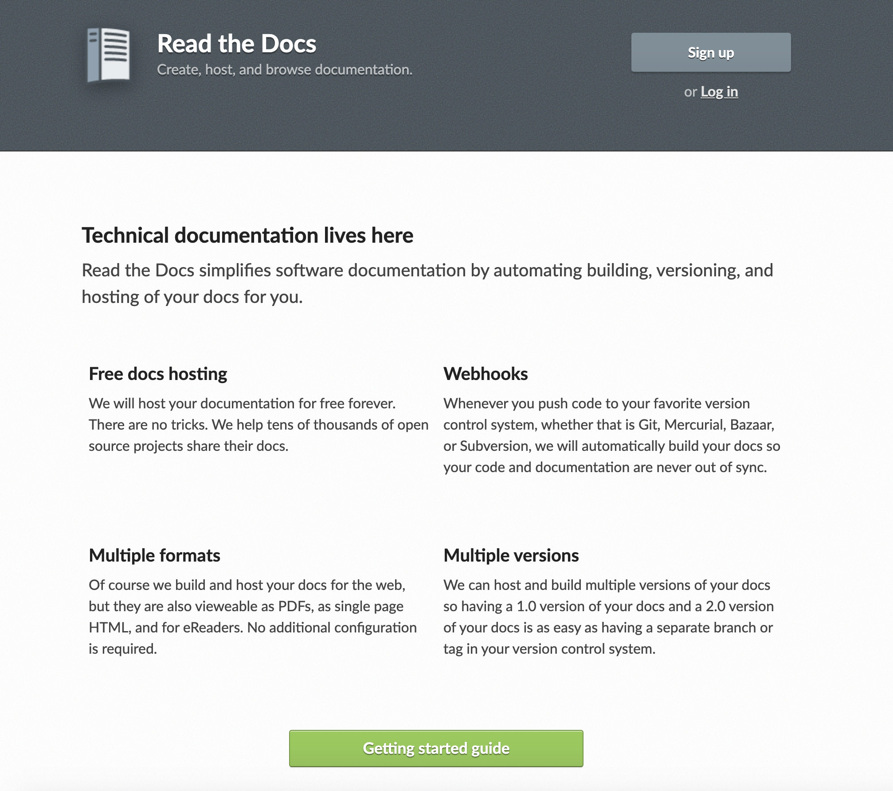

Read The Docs is a free and complete document hosting service.
{kind=link}
Concept of Operations
Use RTD as the primary documentation service for real time documentation¶
RTD would provide the following benefits¶
- Host real time documentation on a public website
- Complete search facility for all hosted documentation
- Version control
- Format conversions
- Unified appearance
Potential documents that could be hosted on RTD¶
- ADE Documentation
- ADE 2 Documentation
- Use Cases and requirements for ADE systems (Google docs)
- SW Development standards (DMT)
- CCB Functional Requirements
- Release notes
- VME boot/info/settings
- Instructions/How-Tos
Steps to use RTD for real time documentation¶
Migrate existing real time documents to RTD
- Compile complete list of documents
- Convert documents
- Verify conversions
- Add to repos
- Publish to RTD
Using RTD for new real time documents
- Learn to write rst
- Write documentation
- Add to repos
- Publish to RTD
Gemini RTD Experiments
Read The Docs Workflow¶
Figure 1
RTD Experiment Team¶
5 engineers 40 hours
Conversion Examples¶
{kind=link}
{kind=link}
Results¶
PDF¶
Most PDF conversions are fine without any modifications and can be directly uploaded to RTD. However, many technical drawings and graphics in PDFs do not convert properly and would either need to be manually redrawn. Another option would be to link PDFs that do not convert properly.
WikiHTML¶
Wiki/HTML conversions generally work without issues. Some minor formatting issues did arise from the Wikis that required manual fixes. Tables of contents did not always convert properly.
Google Docs and Word documents¶
Google Docs and Word (docx) documents generally converted without any issues. Graphics and images occasionally need to be fixed.
Feedback from engineers¶
Initial resistance to learning new system
General positive feedback
Comments to use RTD tools and hosting locally
Using Read The Docs with existing Gemini Documents
Training¶
RTD uses rst markup language. Rst is relatively easy to use, however, rst is not intuitive. A short training for engineers using RTD would save time in the long run. A 1 to 2 hour introduction to rst and RTD would be a good start.
Searching¶
RTD provides a standardized hosting and search environment. Gemini will still have documentations located in different locations, however,
Collaboration¶
Collaboration on Google docs is hard to beat. docs is a better option for live documents.
Time Saving¶
Implementation Estimate
Read The Docs work unit estimates
| Unit | Description | Time (hours) | Quantity | Estimate (hours) |
|---|---|---|---|---|
| Cr eate/update repo | Create a new Git or SVN repo to hold docs or add docs to an existing repo. | 0.1 | 10 | 1 |
| List/find all real time docs | 8 | 1 | 8 | |
| Convert pdf | Convert PDF docs using pandoc and Word. Check docs for accurate and usable conversion. | 0.25 | 100 | 25 |
| Convert doc | Convert Good Docs using pandoc. Check docs for accurate and usable conversion. | 0.1 | 100 | 10 |
| Convert Wiki/HTML | Convert Wiki/HTML docs using pandoc. Check docs for accurate and usable conversion. | 0.15 | 100 | 15 |
| Write documents | Write new rst documents. | 0.01 | 100 | 1 |
| Create automation scripts | Create scripts to au tomatically convert large resources of documents. | 16 | 1 | 16 |
| Publish | Push docs to RTD and check for finished build. | 0.01 | 10 | 0.1 |
| Create Training Material | Create i nstructions and how-tos for basic rst and RTD use cases | 16 | 1 | 16 |
| Misc. adm inistration | Meetings, mail, or ganization, com munication, etc. | 8 | 1 | 8 |
| Contingency | 20 | 1 | 20 | |
| Imp lementation Estimate (hours) | 120.1 |
{kind=link}